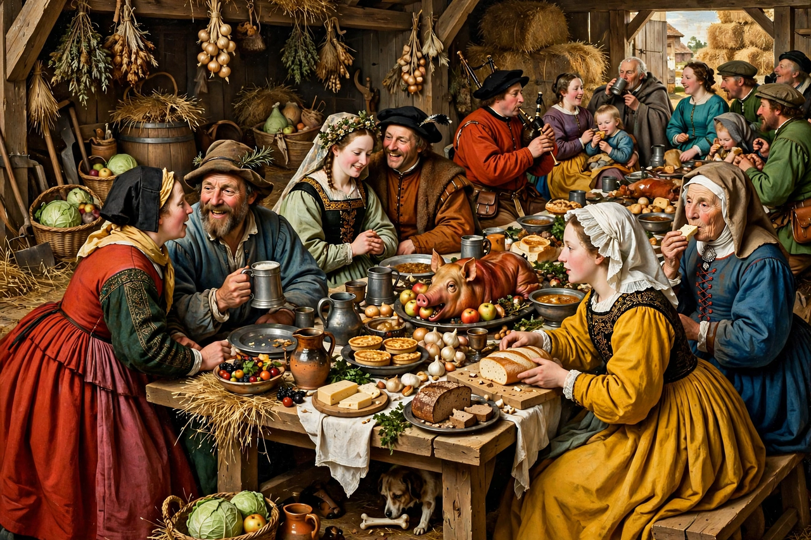

Wikipedia — The Free Encyclopedia

Pieter Bruegel the Elder (c. 1525–1530 – 9 September 1569) was the most significant artist of Dutch and Flemish Renaissance painting. Famous for his landscapes and teeming peasant scenes, he pioneered large, panoramic compositions crowded with figures, earning the nickname "Peasant Bruegel". His sons Pieter Brueghel the Younger and Jan Brueghel the Elder also became painters; to distinguish the father from them, he is called "the Elder" and dropped the 'h' from his surname around 1559.
Bruegel was probably born in Breda or a nearby village. He entered the Antwerp painters' Guild of Saint Luke in 1551 and worked for the print publisher Hieronymus Cock, designing hugely popular engravings. In 1552–53 he travelled to Italy, reaching Sicily and Rome, before settling back in Antwerp. In 1563 he married Mayken Coecke and moved to Brussels, where he received commissions from wealthy patrons including the banker Niclaes Jonghelinck.
Bruegel's best-known paintings include The Hunters in the Snow (1565), part of a cycle of the months; The Peasant Wedding (c. 1567); The Tower of Babel (1563); Landscape with the Fall of Icarus; The Census at Bethlehem; and The Triumph of Death. Unlike earlier Flemish painting, his religious and mythological subjects are embedded in contemporary village life, observed with irony, sympathy and an unsparing eye for folly — themes that also fill his earlier moralising engraving series such as The Seven Deadly Sins.
Only about forty-five paintings are securely attributed to Bruegel, roughly a third of them in the Kunsthistorisches Museum in Vienna. His mixture of minute detail, panoramic landscape and humanist satire shaped Flemish painting for generations and has made him one of the most popular of all Old Masters.